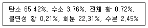
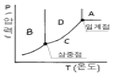
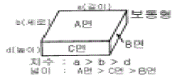
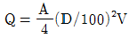
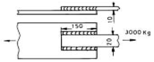

에너지관리기사 (2005-03-20 기출문제)
1과목: 연소공학
1. 상당 증발량 0.⑤ton/min의 보일러에 5800㎉/㎏의 석탄을 태우고자 한다. 보일러의 효율이 87%라 할 때 필요한 화상면적은 약 몇 m2인가? (단, 무연탄의 화상 연소율은 73㎏/m2h이다.)
- 2.0
- 4.4
- 6.7
- 10.9
(정답률: 70%)

2. 중유의 저위발열량이 10000㎉/㎏인 원료 1㎏을 연소시킨 결과 연소열이 7500㎉/㎏이고, 유효 출열이 7230㎉/㎏이었다면 전열효율과 연소효율을 구한 값은?
- 전열효율 : 75%, 연소효율 : 96.4%
- 전열효율 : 96.4%, 연소효율 : 75%
- 전열효율 : 72.3%, 연소효율 : 75%
- 전열효율 : 72.3%, 연소효율 : 96.4%
(정답률: 알수없음)
3. 다음 중 절탄기(economizer)의 설명이 맞는 것은?
- 배기가스로 공기를 예열한다.
- 석탄을 연소시키는 부속품이다.
- 배기가스로 보일러 급수를 예열한다.
- 배기가스로 연료를 예열한다.
(정답률: 50%)
4. 다음 조성의 발생로 가스를 15%의 과잉공기로 완전 연소시켰을 때의 건연소가스량(Nm3/Nm3)은? (단, 발생로 가스의 조성은 CO(31.3%), CH4(2.4%), H2(6.3%), CO2(0.7%), N2(59.3%)이다.)
- 1.99
- 2.54
- 2.87
- 3.01
(정답률: 알수없음)
5. 다음 중 고체연료의 단점 설명으로 틀린 것은?
- 회분이 많고 발열량이 적다.
- 연소효율이 낮고 고온을 얻기 어렵다.
- 점화 및 소화가 곤란하고 온도조절이 곤란하다.
- 연료비가 비싸고 연료를 구하기 어렵다.
(정답률: 82%)
6. 아래와 같은 조성의 코크스 노가스를 100Nm3 연소한 경우 습연소가스량과 건연소가스량의 차이는 몇 Nm3 인가? (단, 코크스 노가스의 조성(용량%)은 CO2 3%, CO 8%, CH4 30%, C2H4 4%, H2 50% 및 N2 5%)
- 108
- 118
- 128
- 138
(정답률: 54%)
7. 다음 중 열정산을 할 때 입열 항에 들어가지 않는 것은?
- 연료의 연소열
- 연도가스 현열
- 연료의 현열
- 공기의 현열
(정답률: 50%)
8. 다음 기체 연료중에서 고발열량(㎉/Nm3)이 가장 큰 것은?
- 고로가스
- 수성가스
- 도시가스
- 액화석유가스
(정답률: 알수없음)
9. 기체 연료의 연소 방식을 크게 2가지로 분류한 것은?
- 등심연소(wick combustion)와 분산연소(spray combustion)
- 예혼합연소(premixing burning)와 확산연소(diffusive burning)
- 액면연소(pool burning)와 증발연소(evaporating combustion)
- 증발연소(evaporating combustion)와 분해연소(decomposing combustion)
(정답률: 알수없음)
10. 액체연료 중 고온건류하여 얻은 타르계 중유의 특징이 아닌 것은?
- 화염의 방사율이 크다.
- 황의 영향이 적다.
- 슬러지를 발생시킨다.
- 단위 용적당의 발열량이 극히 적다.
(정답률: 알수없음)
11. 관성력 집진장치의 집진율을 높이는 방법중 틀린 것은?
- 함진배기가스 속도는 빠를수록 좋다.
- 방해판이 많을수록 제진효율이 우수하다.
- 출구가스 속도가 느릴수록 미세한 입자가 제거된다.
- 기류의 방향 전환각도가 작고 전환회수가 많을수록 제진효율이 증가한다.
(정답률: 40%)
12. 석탄, 코크스, 목재 등을 적열상태로 가열하고, 공기 혹은 산소로 불완전 연소시켜 얻는 연료는?
- 석탄가스
- 증열수성가스
- 발생로가스
- 수성가스
(정답률: 67%)
13. 다음 중 연료비(fuel ratio)를 나타내는 것은?
- 휘발분/고정탄소
- 고정탄소/휘발분
- 탄소/수소
- 수소/탄소
(정답률: 73%)
14. 석탄을 분석한 결과가 아래와 같을 때 연소성 황은 몇 % 인가?

- 0.82
- 0.70
- 0.65
- 0.53
(정답률: 37%)
15. 연소 배기가스량의 계산식으로 틀린 것은? (단, 습연소가스량 V, 건연소가스량 V´, 공기비 m, 이론공기량 A, 또 H, O, N, C, S는 원소, w는 수분)
- V = mA + 5.6H + 0.7O + 0.8N + 1.25w〔Nm3/㎏연료〕
- V = (m-0.21)A + 1.87C + 11.2H + 0.7S + 0.8N + 1.25w〔Nm3/㎏연료〕
- V´= mA - 5.6H + 0.7O + 0.8N〔Nm3/㎏연료〕
- V´= (m-0.21)A + 1.87C + 0.7S + 0.8N〔Nm3/㎏연료〕
(정답률: 47%)
16. 비례식 자동제어를 할 때에 보일러 효율이 높아지는 가장 큰 이유는?
- 증기압에 큰 변동이 없기 때문
- 급수의 시간 격차가 작아지기 때문
- 보일러의 수위가 합리적인 선에 유지되기 때문
- 연료량과 공기량이 일정한 비율로 자동제어되기 때문
(정답률: 91%)
17. 산포식 스토커로 석탄을 연소시키고 있다. 다음중 불꽃층이 형성되는 순서로 맞는 것은?
- 건류층 → 환원층 → 산화층 → 회분(층)
- 회분(층) → 산화층 → 환원층 → 건류층
- 건류층 → 산화층 → 환원층 → 회분(층)
- 산화층 → 환원층 → 건류층 → 회분(층)
(정답률: 70%)
18. 다음 중 연소반응식을 틀리게 표시한 것은?
- H2 +1/2O2 = H2O(수증기) + 119.6 [MJ/㎏수소]
- H2 +1/2O2 = H2O(물) + 142.0 [MJ/㎏수소]
- CH4 + 2O2 = CO2 + 2H2O(수증기) + 35.8[MJ/Nm3메탄]
- CH4 + 2O2 = CO2 + 2H2O(물) + 33.9[MJ/Nm3메탄]
(정답률: 알수없음)
19. 공기비(m)에 대한 식으로 맞는 것은?
- m = 실제공기량/이론공기량
- m = 이론공기량/실제공기량
- m = 1 -과잉공기량/이론공기량
- m = 실제공기량/과잉공기량 - 1
(정답률: 100%)
20. 석탄가스에 대한 설명으로 부적당한 것은?
- 주성분은 수소와 메탄이다.
- 저온건류 가스와 고온건류 가스로 분류된다.
- 탄전에서 발생되는 가스이다.
- 제철소의 코크스 제조시 부산물로 생성되는 가스이다.
(정답률: 82%)
2과목: 열역학
21. 포화 수증기를 단열팽창시키면 상태는 어떻게 되는가?
- 습윤증기가 된다.
- 과포화증기가 된다.
- 포화액이 된다.
- 임계성을 띤다.
(정답률: 알수없음)
22. 다음 중 열역학 제1법칙을 설명한 것으로 가장 적당한 것은?
- 제3의 물체와 열평형에 있는 두 물체는 그들 상호간에도 열평형에 있으며, 물체의 온도는 서로 같다.
- 에너지는 여러 형태를 취하지만 전에너지량은 일정하다.
- 흡수한 열전부를 일로 바꿀 수는 없다.
- 절대 영도 즉 0[K]에는 도달할 수 없다.
(정답률: 82%)
23. 임계점(Critical Point)의 설명 중 옳지 않은 것은?
- 임계점에서는 액상과 기상의 물성정수가 동일하다.
- 임계온도 이상에서는 순수한 기체를 아무리 압축시켜도 액화되지 않는다.
- 액상, 기상, 고상이 함께 존재하는 점을 말한다.
- 액상과 기상이 평형 상태로 존재할 수 있는 최고온도 및 최고압력을 말한다.
(정답률: 50%)
24. 열역학 법칙중 제 3의 물체와 열평형이 있는 두 물체는 그들 상호간에도 열평형이 있다고 하는 법칙은?
- 제 0법칙
- 제 1법칙
- 제 2법칙
- 제 3법칙
(정답률: 60%)
25. 출력 50HP의 가솔린 엔진이 매시간 10㎏의 가솔린을 소모한다. 이 엔진의 효율은? (단, 1[HP-hr] = 632[㎉]로 알려져 있으며 가솔린의 발열량은 10000[㎉/㎏]이다.)
- 21%
- 32%
- 45%
- 60%
(정답률: 57%)
26. 다음 중 교축(throttling)과정을 전후하여 일반적으로 변화하지 않는 열역학적 양은?
- 내부에너지
- 엔탈피
- 엔트로피
- 압력
(정답률: 알수없음)
27. 드로틀링(throttling) 밸브를 이용하여 Joule-Thomson효과를 보고자 한다. 이 때 압력이 증가함에 따라 온도가 증가하는 경우는 Joule-Thomson계수 μ가 어떤 값을 가질 때인가?
- μ = 0
- μ ＞ 0
- μ ＜ 0
- μ값에는 무관하다.
(정답률: 70%)
28. 디젤 사이클에서 압축비 20, 체적비 1.7일 때 열효율을 구한 값은? (단, K = 1.4로 계산할 것)
- 43[%]
- 62[%]
- 72[%]
- 84[%]
(정답률: 37%)
29. 랭킨(rankine) 사이클의 열효율을 높이기 위한 것이 아닌 것은?
- 과열수증기의 사용
- 재가열(reheat) 사이클
- 2중(dual) 또는 혼합(mixed) 사이클
- 재생(regenerative) 사이클
(정답률: 알수없음)
30. "에너지의 공급없이 영구히 일할 수 있는 기관"은 다음의 어느 법칙에 위배되는가?
- 열역학 제 0법칙
- 열역학 제 1법칙
- 열역학 제 2법칙
- 열역학 제 3법칙
(정답률: 알수없음)
31. 20℃, 750㎜Hg에서 상대습도가 80%인 공기의 몰습도를 계산하면? (단, 20℃에서의 물의 증기압은 17.5㎜Hg)
- 0.019
- 0.023
- 0.035
- 0.041
(정답률: 42%)
32. 어떤 장치의 진공도가 700mmHg일 때, 절대 압력으로 표시하면 몇 kg/cm2.a인가? (단, 대기압은 760mmHg이다.)
- 0.029
- 0.⑤9
- 0.079
- 0.099
(정답률: 62%)
33. 가역적 열기관의 효율은 무엇에만 의존하는가?
- 두개의 열원(heat reservoir)의 온도
- 열기관의 종류
- 열기관에 사용되는 작동 유체
- 열기관에 열을 전달하는 온도
(정답률: 알수없음)
34. 150℃의 물을 저장탱크로부터 5ℓ/min의 속도로 48m의 높이에 있는 저장탱크로 수송한다. 펌프의 속도로 3HP의 일을 공급하고 이 물은 열교환기를 통하여 4000kcal/min의 속도로 열을 버린다. 이 과정에서 shaft work(Ws)는 몇 kcal/kg인가? (단, 물의 밀도는 1gcm3이다.)
- 6.41
- 3.41
- 1.32
- 0.64
(정답률: 32%)
35. 냉동사이클을 비교하여 설명한 것으로 잘못된 것은?
- 이상적인 carnot 사이클이 최고의 COP를 나타낸다.
- 가역팽창 엔진을 가진 증기압축 냉동사이클의 성능계수는 최고 값에 접근한다.
- 보통의 증기압축 사이클은 이론치보다 약간 낮은 효율을 갖는다.
- 공기 사이클은 최고의 효율을 가진다.
(정답률: 75%)
36. 아래 그래프는 어떤 순수한 물질의 P-T선도이다. 이 그림에서 영역 A는 무슨 상인가?

- 기체(Vapor)
- 고체(Solid)
- 유체(Fluid)
- 액체(Liquid)
(정답률: 39%)
37. 아래의 선도 중에서 열기관의 효율을 면적의 비로 표시할 수 있는 선도는?
- h-s 선도
- T-S 선도
- T-V 선도
- P-T 선도
(정답률: 67%)
38. 성능계수(COP)가 3인 냉동기가 매분당 1,800KJ의 열을 흡한다. 이 냉동기를 작동하기 위하여 필요한 동력은?
- 10㎾
- 60㎾
- 100㎾
- 600㎾
(정답률: 알수없음)
39. 랭킨 사이클에서 압력 및 온도가 열효율에 미치는 영향의 설명으로 다음 중 옳지 않은 것은?
- 응축기 압력이 낮아지면 배출열량은 적어지고 열효율은 증가한다.
- 배기온도를 낮추면 터빈을 떠나는 습증기의 건도가 감소한다.
- 보일러 압력이 높아지면 배출열량이 감소하여 열효율이 증가한다.
- 주어진 압력에서 과열도가 높을수록 출력을 증가하여 열효율이 증가한다.
(정답률: 알수없음)
40. 대기압 하 24℃에서 상대 습도가 70%이다. 이에 해당하는 노점 온도는 약 몇 도 정도인가? (단, 포화 증기표를 참조하여 근사값을 이용한다.)
- 16℃
- 18℃
- 20℃
- 22℃
(정답률: 19%)
3과목: 계측방법
41. U자관 압력계에 대한 설명으로 틀린 것은?
- 주로 통풍력을 측정하는데 사용된다.
- 정밀측정에 주로 사용된다.
- 수은, 물, 기름 등을 넣어 한쪽 또는 양쪽끝에 측정압력을 도입한다.
- 크기는 특수한 용도의 것을 제외하고는 2m이내의 것이 사용된다.
(정답률: 알수없음)
42. 광고온계의 사용상 주의점이 아닌 것은?
- 광학계의 먼지 상처등을 수시로 점검한다.
- 정밀한 측정을 위하여 여러번 측정하여 평균한다.
- 피측정체와의 사이에 연기나 먼지등이 생기지 않도록 주의한다.
- 측정자간의 오차가 발생하지 않고 정확하다.
(정답률: 알수없음)
43. 다음 압력계 중에서 가장 정도가 높은 것은?
- 경사관 압력계
- 분동식 압력계
- 브르돈관식 압력계
- 다이아프램 압력계
(정답률: 알수없음)
44. 관로(管路)에 설치된 오리피스 전후의 압력차는?
- 유량의 제곱에 비례한다.
- 유량의 제곱근에 비례한다.
- 유량의 제곱에 반비례한다.
- 유량의 제곱근에 반비례한다.
(정답률: 34%)
45. 다음 중에서 세라믹(Ceramic)식 O2계의 세라믹 주원료는?
- Cr2O3
- Zr
- P2O5
- ZrO2
(정답률: 알수없음)
46. 내경이 300㎜인 원관내에 3㎏/sec의 공기가 유입되고 있다. 이 때 관내 압력이 200㎪, 온도는 25℃,공기기체상수는 287J/㎏.K이라고 할 때 공기평균속도는 몇 ㎧인가?
- 1.82
- 2.35
- 18.15
- 23.50
(정답률: 28%)
47. 기체 및 액체 양용으로 사용되는 유량계는?
- 오발(oval) 유량계
- 전자식(電磁式) 유량계
- 루트(root) 유량계
- 교축기구(차압)식 유량계
(정답률: 34%)
48. 다음 중 화학적 연소가스 기체 분석법은 어느 방법을 이용한 것인가?
- 자성
- 비중
- 열전도
- 체적 감소
(정답률: 10%)
49. 침종식 압력계에 대한 설명으로 틀린 것은?
- 봉입액은 자주 세정 혹은 교환하여 청정하도록 유지한다.
- 측정범위는 복종식이 단종식 보다 넓다.
- 계기 설치는 똑바로 수평으로 해야 한다.
- 액체측정에는 부적당하고, 기체의 압력측정에는 적합하다.
(정답률: 70%)
50. 다음 중 열전온도계의 구성부분으로 이용되지 않는 것은?
- 보상도선
- 저항코일과 저항선
- 밀리볼트미터
- 열전쌍의 보호관
(정답률: 알수없음)
51. 정전 용량식 액면계의 특징으로 틀린 것은?
- 측정범위가 넓다.
- 구조가 간단하고 보수가 용이하다.
- 유전율이 온도에 따라 변화되는 곳에 사용할수 있다.
- 습기가 있거나 전극에 피측정체를 부착하는 곳에는 부적당하다.
(정답률: 70%)
52. 1차 제어장치가 제어량을 측정하여 제어명령을 발하고, 2차 제어장치가 이 명령을 바탕으로 제어량을 조절하는 측정 제어와 가장 가까운 것은?
- 캐스케이드제어
- 프로그램제어
- 정치제어
- 비율제어
(정답률: 73%)
53. 아래 내용이 서로 틀리게 조합된 것은?
- 압력의 증대 : 압력계형 온도계
- 전기저항의 변화 : 전기저항 온도계
- 상태의 변화 : 열전대온도계
- 방사 : 방사온도계
(정답률: 65%)
54. 고온물체가 발산한 특성파장(보통 0.65μ)의 휘도가 비교용 표준전구의 필라멘트 휘도와 같을 때 필라멘트에 흐른전류에서 온도가 구해지는 것은?
- 열전온도계
- 광고온계
- 색온도계
- 방사온도계
(정답률: 75%)
55. 정상편차를 옳게 설명한 것은?
- 목표치와 제어량의 차
- 2개 이상의 양 사이에 어떤 비례관계를 갖는 편차
- 과도응답에 있어서 충분한 시간이 경과하여 제어편차가 일정한 값으로 안정되었을 때의 값
- 입력의 시간 미분치에 비례하는 편차
(정답률: 54%)
56. 벨로우즈(Bellows) 압력계에서 Bellows에 탄성의 보조로 코일 스프링을 조합하여 사용하는 이유는?
- 측정압력 범위를 넓히기 위해
- 감도를 증대시키기 위해
- 히스테리시스 현상을 없애기 위해
- 측정지연 시간을 없애기 위해
(정답률: 알수없음)
57. 속도의 수두차를 측정하는 유량계가 아닌 것은?
- 피토튜브(Pitot tube)
- 로타미터(Rota meter)
- 오리피스(Orifice)
- 벤튜리미터(Venturimeter)
(정답률: 64%)
58. 2요소식(二要素式)의 수위제어에 대하여 서술한 것이다. 옳은 것은?
- 수위쪽에 증기압력을 검출하여 급수량을 조절하는 방식이다.
- 수위의 역응답을 제거하기위하여 사용하는 방식이다.
- 구성이 단요소식(單要素式)에 비해 복잡하므로 자력(自力)제어는 불가능하다.
- 부하(負荷)가 변동할 때 수위가 변화하여 급수량이 조절되는 것으로 부하변동에 의한 수위의 변화폭이 적다.
(정답률: 알수없음)
59. 일정한 충진 물질과 캐리어 가스를 사용한 가스크로마토 그래피를 사용하여 주어진 혼합가스를 보다 정확하게 분석하기 위하여서는 여러가지 사항을 고려하여야 한다. 다음 중 고려 사항이 아닌 것은?
- 충진 컬럼(packed column)의 길이
- 충진 컬럼의 온도
- carrier 가스의 속도
- carrier 가스의 압력
(정답률: 알수없음)
60. 자동제어장치중 공기식 계측기에서 Flapper-Nozzle기구는 어떤 역할을 하는가?
- 공기압 → 전기신호로 변환
- 전류 → 전압신호로 변환
- 변위 → 공기신호로 변환
- 변위 → 전류신호로 변환
(정답률: 47%)
4과목: 열설비재료 및 관계법규
61. 다음 중 무기질 보온재의 장점은?
- 내수, 내습성이 좋다.
- 일반적으로 안전사용온도가 높다.
- 강도는 떨어지나, 안전사용온도 범위가 넓다.
- 내수, 내습성은 떨어지나 강도가 높다.
(정답률: 37%)
62. 다음 중 전로법에 의한 제강 작업시의 열원은?
- 가스의 연소열
- 코크스의 연소열
- 석회석의 반응열
- 용선속 불순원소의 산화열
(정답률: 65%)
63. 다음 보온재 중에서 최고안전사용온도가 가장 높은 것은?
- 석면
- 퍼얼라이트
- 포옴글래스
- 탄산마그네슘
(정답률: 91%)
64. 다음 중 실리카를 주성분으로 하는 내화벽돌은?
- 샤모트 벽돌
- 반규석질 벽돌
- 규석 벽돌
- 탄화규소 벽돌
(정답률: 42%)
65. 특정열사용기자재의 검사대상 기기중 제조검사에 한하는 것은?
- 구조검사
- 설치검사
- 개조검사
- 설치장소 변경검사
(정답률: 25%)
66. 내화단열 벽돌을 분류 설명한 것으로 잘못된 것은?
- A : 경량, 단열목적
- B : 요로용
- C : 내압축강도용
- D : 고압용
(정답률: 67%)
67. 다음 중 산성 슬래그와 접촉하여 가장 쉽게 침식되는 내화물은?
- 납석질 내화물
- 규석질 내화물
- 탄소질 내화물
- 마그네시아질 내화물
(정답률: 알수없음)
68. 산업자원부령에 따르면 에너지절약전문기업의 등록신청서는 누구에게 제출하여야 하는가?
- 노동부장관
- 에너지관리공단 이사장
- 산업자원부장관
- 시∙도지사
(정답률: 46%)
69. 다음 중 에너지관리공단의 사업이 아닌 것은?
- 집단에너지 사업
- 열사용기자재의 안전관리
- 에너지의 안정적 공급
- 대체에너지 개발사업의 촉진
(정답률: 48%)
70. 에너지 절약형 시설투자시 세제 지원이 되는 시설투자가 아닌 것은?
- 노후보일러 교체
- 열병합발전 사업
- 5%이상의 에너지 절약 효과가 있다고 인정되는 설비
- 산업용 요로 등 에너지 다소비 설비의 대체
(정답률: 74%)
71. 일반적으로 압력 배관용에 사용되는 강관의 온도 범위는?
- 650℃이하
- 550℃이하
- 450℃이하
- 350℃이하
(정답률: 54%)
72. 파이프의 설계시 수압 30㎏/cm2, 유량 0.5m3/s를 상온에서 이음매없는 강관을 사용할 때 외경은 몇 ㎜로 하는가? (단, 허용인장응력 8㎏/mm2, 유속 5m/s, 부식상수는 1㎜, 이음 효율은 1 이다.)
- 413
- 401
- 373
- 331
(정답률: 55%)
73. 도자기 소성 분위기에 대한 순서로 바르게 표기된 것은?
- 산화성 분위기 →환원성 분위기 →중성 분위기
- 산화성 분위기 →중성 분위기 →환원성 분위기
- 환원성 분위기 →중성 분위기 →산화성 분위기
- 환원성 분위기 →산화성 분위기 →중성 분위기
(정답률: 알수없음)
74. 다음 중 무산화 가열방식 단조로의 무산화 분위기 조성 방법은?
- 발생로 가스를 가열실에 도입한다.
- 가열실을 머플 구조로 한다.
- 연료의 열분해 가스를 가열실에 도입한다.
- 가열실을 진공으로 한다.
(정답률: 37%)
75. 국가에너지 기본계획은 몇 년 이상을 계획 기간으로 하는가?
- 3년
- 5년
- 7년
- 10년
(정답률: 50%)
76. 보통형 벽돌 쌓기중 스트레쳐(stretcher)를 바로 설명한 것은?

- A면 끼리의 접합
- B면 끼리의 접합
- C면 끼리의 접합
- A면, B면, C면을 교대로 접합
(정답률: 알수없음)
77. 다음 중 플라스틱 내화물의 설명으로 틀린 것은?
- 소결력이 좋고 내식성이 크다.
- 캐스터블 소재보다 고온에 적합하다.
- 내화도가 높고 하중 연화점이 낮다.
- 팽창 수축이 적다.
(정답률: 44%)
78. 검사대상기기 설치자는 검사대상기기조정자를 선임하거나 해임한 때 산업자원부령에 따라 누구에게 신고하여야 하는가?
- 시∙도지사
- 시장∙군수
- 경찰서장∙소방서장
- 에너지관리공단이사장
(정답률: 알수없음)
79. 에너지이용합리화법에 의한 석유환산기준을 잘못 설명한 것은?
- 원유(1kg = 10,000kcal)를 기준한 것이다.
- 최종 에너지사용기준으로 전력량을 환산하는 경우 1kWh는 860kcal을 적용한다.
- 8300kcal의 발열량을 가진 휘발유의 석유환산계수는 0.83 이다.
- 11000kcal/Nm3의 발열량을 가진 도시가스의 석유환산계수는 0.70 이다.
(정답률: 58%)
80. 노재의 특성중 내화도가 가장 높은 내화물은?
- 납석벽돌
- 규석벽돌
- 고알루미나질 벽돌
- 크롬마그네시아 벽돌
(정답률: 58%)
5과목: 열설비설계
81. 보일러 구멍의 보강시 보강재의 허용인장응력이 모재보다 클 때의 강도 계산은 어떻게 하는가?
- 모재와 같은 강도로 취급하여 계산한다.
- 모재와 비례하여 보강재를 감소시킨다.
- 응력치에 역비례하여 단면적을 증가시킨다.
- 무시하고 별도로 계산한다.
(정답률: 60%)
82. 증기 트랩의 종류중 증기와 응축수의 온도 차이를 이용한 것은?
- 단노즐식
- 상향버킷식
- 플로우트식
- 바이메탈식
(정답률: 60%)
83. 대형보일러를 옥내에 설치할 때 보일러의 상부에서 보일러실의 천정까지의 거리는 얼마 이상이어야 하는가?
- 60㎝
- 80㎝
- 120㎝
- 160㎝
(정답률: 65%)
84. 압력용기의 설치상태에 대한 설명이다. 잘못된 것은?
- 압력용기의 기초는 약하여 내려앉거나 갈라짐이 없어야한다.
- 압력용기는 1개소 이상 접지되어야 한다.
- 압력용기의 본체는 바닥에서 30㎜ 이상 높이 설치되어야 한다.
- 압력용기의 배관은 보온되어야 한다.
(정답률: 92%)
85. 최고 사용압력이 1.5MPa(15㎏/cm2)을 넘는 강철제보일러의 수압시험 압력은 최고 사용압력의 몇 배로 하면 좋은가?
- 1.5
- 2
- 2.5
- 3
(정답률: 37%)
86. 열정산에 대한 내용 설명중 잘못된 것은?
- 일반적으로 입열의 총합과 출열의 총합은 같다.
- 기준 온도는 보통 상온(18-20℃)이나 0℃로 한다.
- 열정산의 결과는 크게 입열, 출열, 현열로 나누어진다.
- 열설비에 공급된 열과 소비된 열량과의 관계를 밝히는 것을 말한다.
(정답률: 50%)
87. 관의 안지름을 D(㎝), 1초간의 평균 유속을 V(m/sec)라할 때 1초간의 평균 유량 Q(m3/sec)를 구하는 식은?
- Q = DV
- Q = AD2V

- Q = (V/100)2D
(정답률: 64%)
88. 열교환기의 격벽을 통해 정상적으로 열교환이 이루어지고 있을 경우 단위시간에 대한 교환열량 q㎙ (열유속)의 식은? (단, Q㎙ 는 열교환량, A는 전열면적이다.)
- q㎙ = AQ㎙
- q㎙ =A/Q㎙
- q㎙ =Q㎙/A
- q㎙ = A(Q㎙ -1)
(정답률: 62%)
89. 일반적인 강철 파이프에 있어서 스케줄 넘버(schedule number)는 무엇을 의미하는가?
- 파이프의 외경
- 파이프벽의 두께
- 파이프의 내경
- 파이프의 단면적
(정답률: 73%)
90. 80℃의 벤젠 2200㎏/h을 40℃까지 냉각시킬 때, 냉각수온도를 입구 30℃, 출구 45℃로 하여 대향류열교환기형식의 이중관식 냉각기를 설계할 때 적당한 관의 길이(m)는? (단, 벤젠의 평균비열 : 0.45㎉/㎏℃, 관내경 0.0427m, 총괄전열계수 : 515㎉/m2h℃ 이다.)
- 8.7m
- 18.7m
- 28.7m
- 38.7m
(정답률: 34%)
91. 10ton의 인장하중을 받고 있는 양쪽 덮개판 맞대기 리벳이 음이 있다. 리벳의 지름을 16㎜, 리벳의 허용전단력을 06㎏/mm2이라 하면 최소한 몇 개의 리벳이 필요한가?
- 1개
- 3개
- 5개
- 7개
(정답률: 64%)
92. 다음 중 안전밸브에 대한 설명으로 적당치 못한 것은?
- 안전밸브는 보일러 몸체에 직접 부착시킨다.
- 안전밸브는 쉽게 검사할 수 있는 개소에 설치한다.
- 증기보일러는 2개이상의 안전밸브를 설치해야 한다.
- 안전밸브 및 압력방출장치의 크기는 호칭 지름 50㎜이상으로 한다.
(정답률: 50%)
93. 원통 보일러를 수관 보일러와 비교하였을 때의 설명으로 틀린 것은?
- 형상에 비해서 전열면적이 적고 열효율은 수관보일러보다 낮다.
- 전열면적당 수부의 크기는 수관보일러에 비해 크다.
- 구조가 간단하므로 취급이 쉽다.
- 구조상 고압용 및 대용량에 적합하다.
(정답률: 64%)
94. 다음 중 보일러의 전열효율을 향상시키기 위한 방법으로 가장 거리가 먼 것은?
- 슈트블로어 설치
- 인젝터 설치
- 공기예열기 설치
- 과열기 설치
(정답률: 64%)
95. 이온 교환제에 의한 경수의 연화 원리는?
- 수지의 성분과 Na형의 양이온이 결합하여 경도성분이 제거되기 때문이다.
- 산소 원자와 수지가 결합하여 경도 성분이 제거되기 때문이다.
- 물속의 음이온과 양이온이 동시에 수지와 결합하여 제거되기 때문이다.
- 수지가 물속의 모든 이물질과 결합하기 때문이다.
(정답률: 75%)
96. 그림과 같이 측면 필릿용접이음(용접부의 표면은 볼록형, 단위 ㎜)에 생기는 전단응력은 대략 ㎏/cm2인가?

- 135
- 141
- 282
- 350
(정답률: 46%)
97. 유량 5m3/sec, 수압 7㎏/cm2인 주철제 파이프의 내경을 계산한 근사값은? (단, 평균 유속은 2m/sec이다.)
- 1.5m
- 1.8m
- 2.1m
- 2.4m
(정답률: 알수없음)
98. 프라이밍(Priming) 및 포오밍(Forming)이 발생한 경우에 취하는 조치로서 옳지 않은 것은?
- 연소량을 적게 한다.
- 보일러 물의 일부를 취출하여 새로운 물을 넣는다.
- 증기 밸브를 열고 수면계의 수위의 안정을 기다린다.
- 안전 밸브 수면계의 시험과 압력계 연락관을 취출하여 본다.
(정답률: 67%)
99. 압력 10㎏/cm2인 포화수가 압력 4㎏/cm2인 재증발기(Flash Vessel)에 들어올 때, 포화수 100㎏당 대략 몇 ㎏의 증기가 발생하는가? (단, 10㎏/cm2에서 포화수 엔탈피는 185㎉/㎏, 4㎏/cm2에서 포화수 엔탈피는 152㎉/㎏이고, 4㎏/cm2의 증기 엔탈피는 656㎉/㎏이다.)
- 5.0
- 6.5
- 28.2
- 36.7
(정답률: 46%)
100. 저압공기 분무(噴霧)버너에 대하여 잘못 설명한 것은?
- 분무용 공기는 매우 소량이다.
- 구조가 간단하여 취급하기 쉽다.
- 연소용 기름의 점도를 저하시켜야 한다.
- 버너의 분출구 부근에서 높은 열이 발생한다.
(정답률: 알수없음)
총 연소열 = 연소되는 석탄의 질량 × 연소열
총 연소열 = 0.⑤ ton/min × 60 min/h × 5800 kcal/kg
총 연소열 = 17400 kcal/h
보일러의 효율이 87%이므로, 보일러에서 생성되는 열의 양은 다음과 같습니다.
생성되는 열 = 총 연소열 × 효율
생성되는 열 = 17400 kcal/h × 0.87
생성되는 열 = 15138 kcal/h
무연탄의 화상 연소율은 73 kg/m2h이므로, 필요한 화상면적은 다음과 같습니다.
화상면적 = 생성되는 열 / (연소열 × 화상 연소율)
화상면적 = 15138 kcal/h / (5800 kcal/kg × 73 kg/m2h)
화상면적 = 3.⑤ m2
하지만, 이 문제에서는 화상면적을 "약 몇 m2"로 요구하고 있으므로, 반올림하여 정답은 4.4 m2입니다.